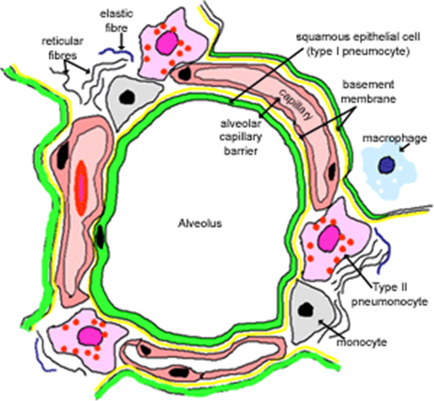
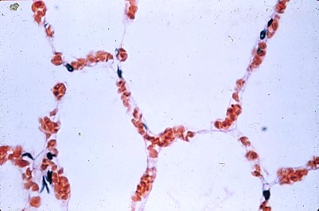

Very Thin Diffusion Barrier for Gas Exchange
Layers of respiratory membrane:
1. Fluid layer with surfactant.
2. Type I alveolar cell membranes.
(3. Narrow interstitial space.)
4. Capillary endothelial cell membranes.

O
2
CO
2